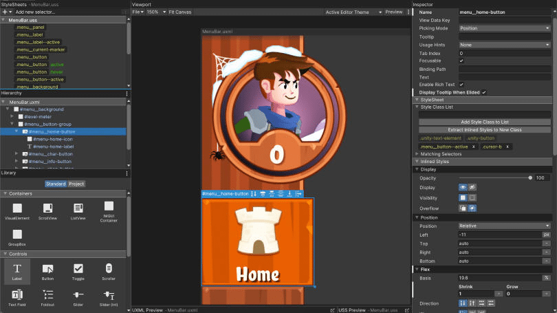

UI Toolkit

| Release date | November 2020 |
| Technologies | C#, Unity |
| Website | Unity.com |
UIToolkit is a web style retained UI system. Its creation came from the need to replace IMGUI within the editor. Having extensive knowledge of UI frameworks having built three previously I provided key insights into user expectations and improving upon workflows based on collected feedback.